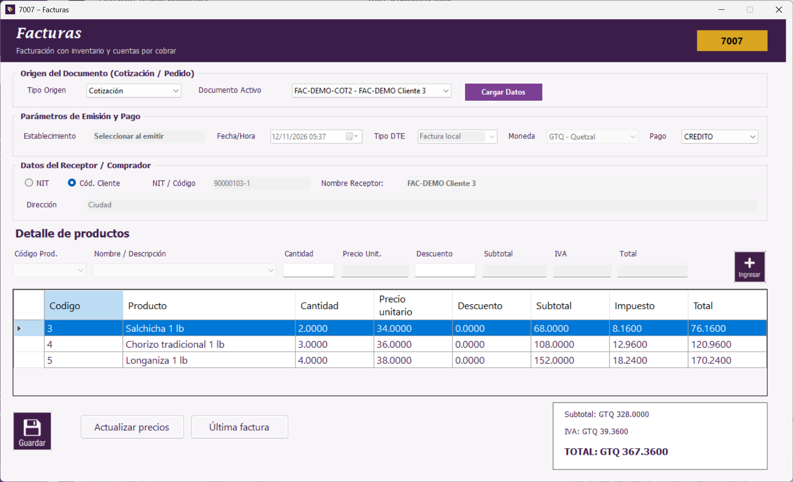

La captura muestra un ejemplo de documento cargado; el establecimiento actual siempre es Embutidos de Calidad, S.A.
Los productos del documento conservan sus precios comprometidos. Puede quitar una línea con Supr o Retroceso, pero no agregar ni editar productos del origen en este formulario.
Después de confirmar la factura, la cotización pasa a ACEPTADA y el pedido a COMPLETADO, según corresponda. La relación con el encabezado impide volver a facturarlos y desaparecen del selector.